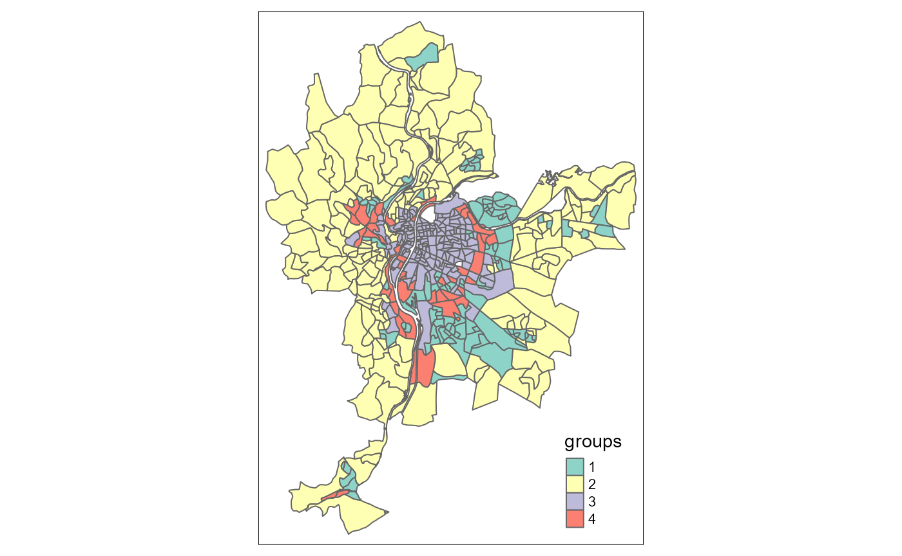

vignettes/web_vignettes/FCMres.Rmd
FCMres.RmdIn this vignette, we want to show how to create a FCMres
object from results obtained with other classification or clustering
methods. This can be very useful to compare results with methods
available in other packages. We give a practical example here with the
hclust function.
We start by clustering the observations in the LyonIris
dataset with the hclust function and retaining 4
groups.
library(geocmeans)
library(tmap)
library(dplyr)
library(ggplot2)
library(spdep)
library(terra)
library(sf)
spdep::set.mcOption(FALSE)## [1] FALSE
spdep::set.coresOption(1L)## NULL
data("LyonIris")
# selecting the columns for the analysis
AnalysisFields <- c("Lden","NO2","PM25","VegHautPrt","Pct0_14",
"Pct_65","Pct_Img","TxChom1564","Pct_brevet","NivVieMed")
# rescaling the columns
Data <- st_drop_geometry(LyonIris[AnalysisFields])
for (Col in names(Data)){
Data[[Col]] <- scale(Data[[Col]])
}
# applying the hclust function
clust <- hclust(dist(Data), method = "ward")
# getting the groups
LyonIris$Hclust_groups <- as.character(cutree(clust, k = 4))
Data$Hclust_groups <- as.character(cutree(clust, k = 4))
# mapping the groups
tm_shape(LyonIris) +
tm_polygons(col = "Hclust_groups", title = "groups")
Now, if we want to use the functions provided by
geocemans, we must create a FCMres object
manually. This is basically a list with some required slots:
In this case, we calculate the centres of the groups as the mean of each variable in each group.
centers <- Data %>%
group_by(Hclust_groups) %>%
summarise_all(mean)
centers <- as.matrix(centers[2:ncol(centers)])The membership matrix is a simple binary matrix. We can create it
with the function cat_to_belongings.
member_mat <- cat_to_belongings(Data$Hclust_groups)And we can now create our FCMres object.
Data$Hclust_groups <- NULL
hclustres <- FCMres(list(
"Centers" = centers,
"Belongings" = member_mat,
"Data" = Data,
"m" = 1,
"algo" = "hclust"
))It is now possible to use almost all the functions in the geocmeans package to investigate the results.
# quick summaries about the groups
summary(hclustres)
violinPlots(hclustres$Data, hclustres$Groups)
spiderPlots(hclustres$Data, hclustres$Belongings)
mapClusters(LyonIris, hclustres)
# some indices about classification quality
calcqualityIndexes(hclustres$Data,
hclustres$Belongings,
hclustres$m)
# spatial diagnostic
Neighbours <- poly2nb(LyonIris,queen = TRUE)
WMat <- nb2listw(Neighbours,style="W",zero.policy = TRUE)
spatialDiag(hclustres, nblistw = WMat)
# investigation with the shiny app
sp_clust_explorer(hclustres, spatial = LyonIris)When working with raster data, a little more work must be done to
create a FCMres object. We show here a complete example
with the Arcachon dataset.
We start here by applying the k-means algorithm to a set of rasters.
Arcachon <- terra::rast(system.file("extdata/Littoral4_2154.tif", package = "geocmeans"))
names(Arcachon) <- c("blue", "green", "red", "infrared", "SWIR1", "SWIR2")
# loading each raster as a column in a matrix
# and scale each column
all_data <- do.call(cbind, lapply(names(Arcachon), function(n){
rast <- Arcachon[[n]]
return(terra::values(terra::scale(rast), mat = FALSE))
}))
# removing the rows with missing values
missing <- complete.cases(all_data)
all_data <- all_data[missing,]
# applying the kmeans algorithm with 7 groups
kmean7 <- kmeans(all_data, 7)We must now create three objects:
# creating Data (do not forget the standardization)
Data <- lapply(names(Arcachon), function(n){
rast <- Arcachon[[n]]
return(terra::scale(rast))
})
names(Data) <- names(Arcachon)
# creating rasters
ref_raster <- Arcachon[[1]]
rasters <- lapply(1:7, function(i){
# creating a vector with only 0 values
vals <- rep(0, terra::ncell(ref_raster))
# filling it with values when the pixels are not NA
vals[missing] <- ifelse(kmean7$cluster == i,1,0)
# setting the values in a rasterLayer
rast <- ref_raster
terra::values(rast) <- vals
return(rast)
})
# creating centers
all_data <- as.data.frame(all_data)
names(all_data) <- names(Arcachon)
all_data$kmean_groups <- as.character(kmean7$cluster)
centers <- all_data %>%
group_by(kmean_groups) %>%
summarise_all(mean)
centers <- as.matrix(centers[2:ncol(centers)])We can now create a FCMres object !
myFCMres <- FCMres(list(
"Data" = Data,
"Centers" = centers,
"rasters" = rasters,
"m" = 1,
"algo" = "kmeans"
))And again, we can use the functions provided in geocmeans !
# quick summaries about the groups
summary(myFCMres)
violinPlots(myFCMres$Data, myFCMres$Groups)
spiderPlots(myFCMres$Data, myFCMres$Belongings)
mapClusters(object = myFCMres)
# some indices about classification quality
calcqualityIndexes(myFCMres$Data,
myFCMres$Belongings,
myFCMres$m)
# spatial diagnostic
w1 <- matrix(1, nrow = 3, ncol = 3)
spatialDiag(myFCMres, window = w1, nrep = 5)
# investigation with the shiny app
sp_clust_explorer(myFCMres)